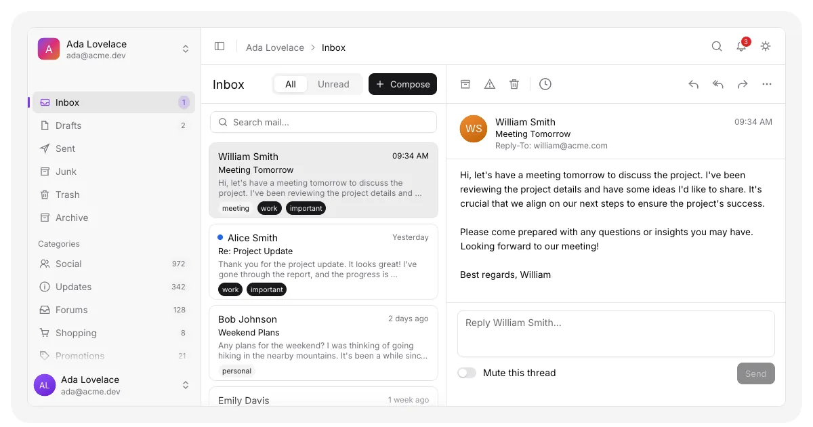

Mail Client
Three panes: folders with live unread counts, a searchable list with All / Unread tabs, a reading pane with actions and inline reply; ↑ ↓ E Del C shortcuts and a compose dialog.

Usage
Add glowkit next to eframe:
cargo add glowkit eframeThen draw it inside any egui Ui:
use glowkit::prelude::*;
use glowkit::templates::MailApp;
let mut app = MailApp::default();
app.show(ui);Prefer to own the code? The glowkit CLI copies this component's source into your project, shadcn-style:
cargo install glowkit-cli
glowkit add app-mailEquivalent to
If you know this pattern from shadcn/ui, Superhuman and Apple Mail, Mail Client is the Rust version: an original egui implementation, not a port, that runs natively and in WebAssembly.
- Mail exampleshadcn/ui
- InboxSuperhuman
- Three-pane layoutApple Mail
About Mail Client
Mail Client is one of 43 components in glowkit's Templates category. It lives in the glowkit-templates crate, enabled by the templates feature of glowkit (on by default). It reads its colors from the active glowkit theme, so it matches the rest of your app in light, dark or a custom brand theme, and every color, size and timing has a setter to override it.
Complete screens you can start from: landing, pricing, auth, onboarding and error pages, plus working app templates such as an analytics dashboard, CRM, e-commerce admin, mail client, team chat, AI assistant, agent session manager, local LLM chat, trading terminal and profiler.